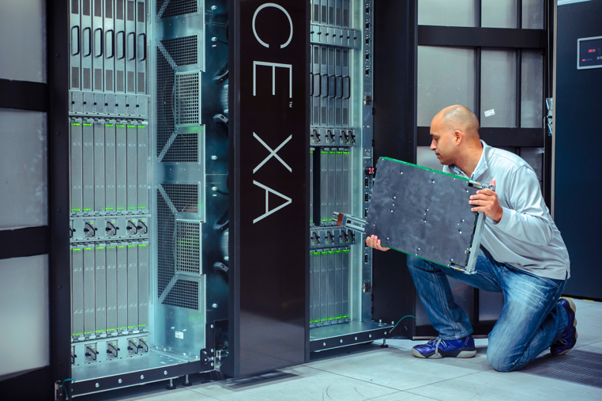
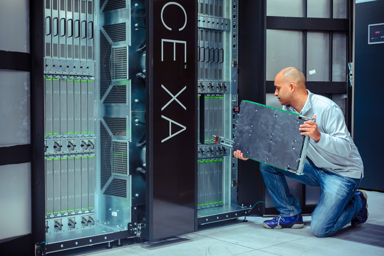

HPC facilities for UK researchers
Andy Turner, EPCC
a.turner@epcc.ed.ac.uk
Clone/fork this presentation at: https://github.com/hpc-uk/facilities-presentation

Slide content is available under under a Creative Commons Attribution-NonCommercial-ShareAlike 4.0 International License.
This means you are free to copy and redistribute the material and adapt
and build on the material under the following terms: You must give appropriate credit, provide
a link to the license and indicate if changes were made. If you adapt or build on the material
you must distribute your work under the same license as the original.
Note that this presentation contains images owned by others. Please seek their permission
before reusing these images.
Built using reveal.js
reveal.js is available under the MIT licence
Overview
- UK HPC Facilities
- ARCHER - UK National Supercomputing Service
- DiRAC - STFC national HPC service
- UK National Tier-2 HPC facilities
- Other facilities
- Getting Advice
- Summary
UK HPC Facilities
HPC Tiers
- Tier-1 Facilities: ARCHER and DiRAC
- Tier-2 Facilities: (between Tier-1 and Tier-3!)
- Tier-3 Facilities: institutional facilities
- Other Facilities: e.g. public cloud
Distinctions often blur between different tiers
Information on facilities and how to access them
Open Source, community-developed resource
HPC Services Covered
- ARCHER - UK National Supercomputing Service
- DiRAC - STFC national HPC service
- UK National Tier-2 HPC facilities
- Other facilities
UK National Supercomputing Service
ARCHER Service Design
- High core count distributed memory: 1000+ cores
- "Traditional" capability HPC
- Main users: Materials science, Climate/ocean modelling, CFD, etc.
- Growing interest in non-traditional use: e.g. data science, bioinformatics
Cray XC30: 118,080 cores (4920 nodes)
2× 12-core Xeon per node; 64/128 GiB memory
ARCHER Support
Large amount of support provided by EPCC and Cray
- Helpdesk with access to EPCC and Cray expertise
- Free training across the UK
- eCSE calls for software development (final call now closed)
- Benchmarking/profiling work to support users
All free at point of use
Access to ARCHER
- Instant Access (EPSRC remit only)
- Small amounts of resource to test ARCHER facilities
- ARCHER Driving Test
- Complete simple test and gain small amounts of resource to test ARCHER facilities
- Resource Allocation Panel (RAP) (EPSRC remit only)
- Applications for large amounts of ARCHER resource for 1 year
- Grant Access
- Add access costs to grant application (notional for EPSRC/NERC, real otherwise)

STFC National HPC Service
- Range of different systems
- Covers capacity to capability use
- Main HPC resource for STFC
A variety of HPC technology is used across DiRAC systems to meet different research challenges
- Extreme Scaling: University of Edinburgh
- Applications that scale to high core counts and require high interconnect performance
- Data Intensive: University of Cambridge, University of Leicester
- Analysis of large data sets using a combination of modelling and simulation
- Memory Intensive: University of Durham
- Detailed and complex simulations related to computational fluid dynamic problems
Access to DiRAC
- Seedcorn Access
- Small amounts of resource to test DiRAC facilities. Always available by contacting the DiRAC service.
- Resource Allocation Committee (RAC)
- Applications for large amounts of DiRAC resource for either 1 year (small projects) or 3 years (large projects).
Tier2: National Facilities
Nationally accessible, located across the UK

Intel Xeon Clusters
- Cirrus@EPCC
- 10,080 core Broadwell, FDR Infiniband Hypercube
- HPC Midlands+
- 14,336 core Broadwell, 3:1 blocking EDR Infiniband (764 core non-blocking)
- 10 POWER8 per nodes with 1 TB memory
- Cambridge CSD3
- 24,576 core Skylake, Intel Omnipath
- Materials and Molecular Modelling Hub
- 17,280 core Broadwell, 3:1 blocking Intel Omnipath (864 core non-blocking)
Other architectures
- JADE
- 22 Nvidia DGX-1: 2× Xeon + 8× Nvidia P100 GPGPU
- Cambridge CSD3
- 90 nodes: Xeon + 4× Nvidia P100 GPGPU, EDR Infiniband
- 384 Xeon Phi nodes (96 GiB memory per node), Intel Omnipath
- 50 node Hadoop Cluster
- Isambard@GW4
- 10,000+ ARMv8 cores, Cray Aries Interconnect
- Due mid-2018
- Flexible HPC:
- Traditional HPC
- Task farming
- Data science
- Supported by EPCC experts:
- Wide range of experience and expertise
- Free access to RSE expertise for all users - irrespective of location
- Close links with ARCHER technical support
- Broad range of software preinstalled:
- Traditional HPC (e.g. VASP, OpenFOAM, GROMACS)
- Data science (e.g. R, Spark, Hadoop)
- Containerisation and mobile compute (Singularity)
 

- Mixed workflows:
- Colocate big comute and big data
- Facilitate complex workflows
- Wide range of hardware:
- Intel Xeon CPU cluster
- Intel Xeon Phi cluster
- NVidia GPU cluster
- Hadoop cluster
- RSE support:
- Collaborative/cooperative support model
- Based in Cambridge with additional support in some partner institutions
- HPC Cluster:
- Standard HPC jobs
- Wide range of software and tools
- OpenPower System:
- POWER8 + GPU + SSD file store
- Data analysis of large datasets
- Test bed for codes that are memory bandwidth limited
- On-the-fly data processing
- RSE support:
- Support for partner institutions
- Distributed across consortium
- Exploring ARM technology:
- Cray XC50 ARMv8 system (due mid 2018)
- Production HPC based on ARM
- Performance comparisons and benchmarking
- Cray software tools (compilers, libraries, etc.)
- Support and expertise:
- RSE effort provided by GW4 institutions
- Cray/ARM Centre of Excellence
- Training and Hackathons
- GPUs for research:
- 50% machine learning
- 30% molecular dynamics
- 20% other use
- Powerful individual nodes (8 GPUs)
- Support and expertise:
- Support for partner institutions
- Training committed by some partners
- Support for Materials and Molecular Modelling:
- Bridge gap between local resources and ARCHER
- Service specialised for MMM communities
- Community building within MMM domain
- Access:
- 75% for partner institutions
- 25% for non-partner via UKCP and MCC
- Support and expertise:
- Support for system provided by UCL research computing
- Named points of contact in partner institutions
Access to Tier2
- Instant and Pump-Priming Access
- Small amounts of resource to test Tier2 facilities
- Available on Cirrus and CSD3
- Resource Allocation Panel (RAP) (EPSRC remit only)
- Applications for large amounts of Tier2 resource for 1 year
- Grant Access
- Add access costs to grant application (notional for EPSRC, real otherwise)
- Materials and Molecular Modelling Hub
- Access via Materials Chemistry (MCC) or UK Car-Parrinello (UKCP) consortia
Other access routes may available for partners and local institutions. Check individual websites.
- Cirrus@EPCC
- http://www.cirrus.ac.uk
- HPC Midlands+
- http://www.hpc-midlands-plus.ac.uk
- Cambridge CSD3
- http://www.csd3.cam.ac.uk
- JADE
- http://www.jade.ac.uk
- Isambard@GW4
- http://gw4.ac.uk/isambard
- Materials and Molecular Modelling Hub
- https://mmmhub.ac.uk
Other HPC Facilities
International Facilities
- PRACE
- Large-scale European facilities
- Number of different call types available
- http://www.prace-ri.eu
- US DoE INCITE
- Access to the largest HPC facilities in the USA
- Need to demonstrate need for extreme parallel scaling
- http://www.doeleadershipcomputing.org/incite-program/
Getting Advice
Helpdesks
All the sevices described provide a helpdesk service to answer queries on their services
From local ARCHER/HPC Champions
Expertise in helping researchers choose the correct resource and use them effectively.
http://www.archer.ac.uk/community/champions/names/
Campaigning for the recognition of the RSE role, creating a community of RSE's and organising events for RSE's to meet, exchange knowledge and collaborate.
Join the community!
Summary
Test Access
ARCHER Driving Test: Access to ARCHER for any researcher based at UK institution
Instant Access: Access to ARCHER, Cirrus, CSD3
DiRAC Seedcorn: Access to DiRAC
Specific Calls for Compute Time
EPSRC RAP: Access to ARCHER and Tier2 for EPSRC-remit research. Open Now!
DiRAC RAC: Access to DiRAC for STFC-remit research
Access via Grant Proposals
ARCHER: any funding body possible - notional costs for EPSRC/NERC
Tier2: any funding body possible - notional costs for EPSRC
DiRAC: no time via grant applications - DiRAC RAC used instead
- Wide range of HPC facilities and technologies available to UK researchers
- Different access mechanisms for different research areas
- RAP calls for access to ARCHER and Tier2 now open - close 10 Apr 2018
- Lots of ways to get support if you need it